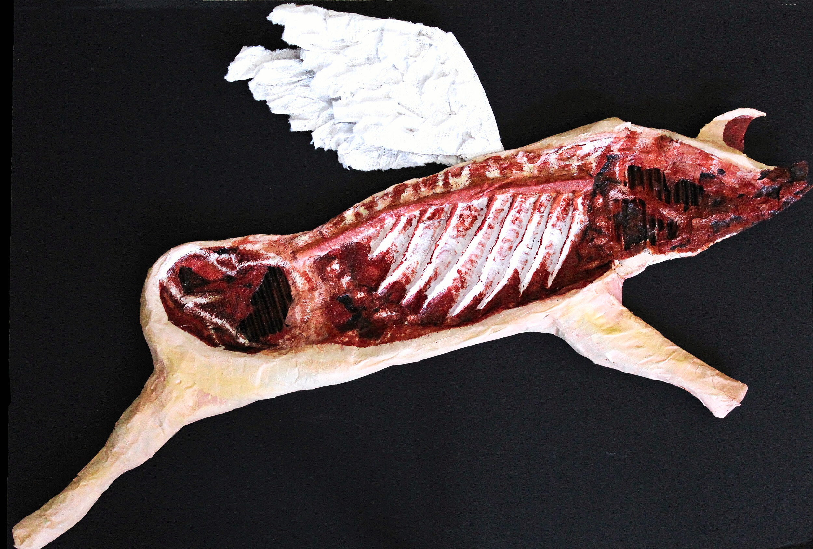
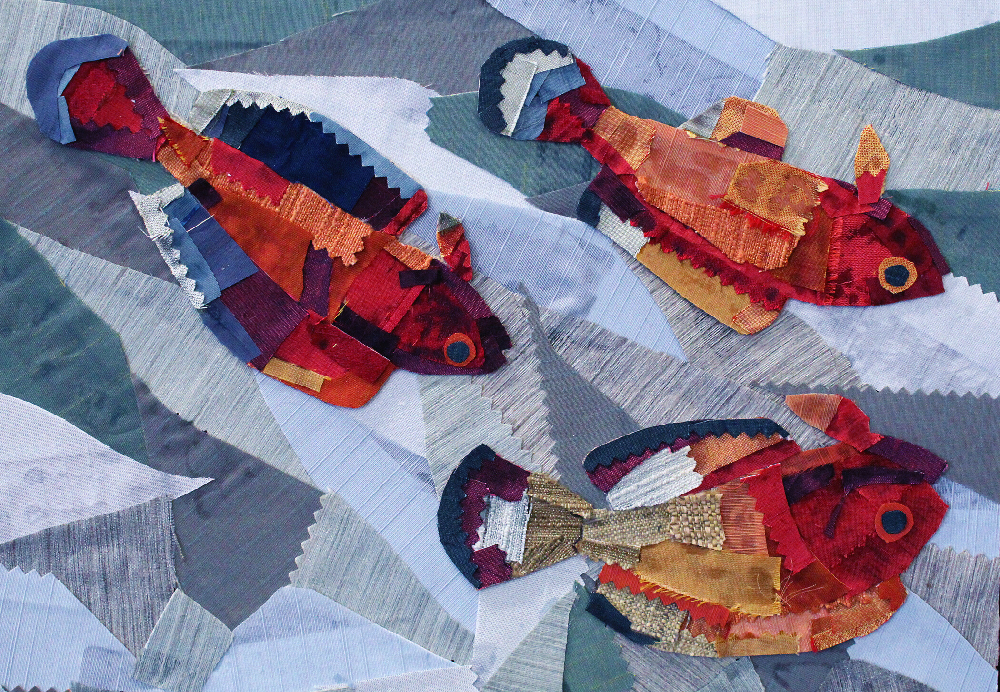
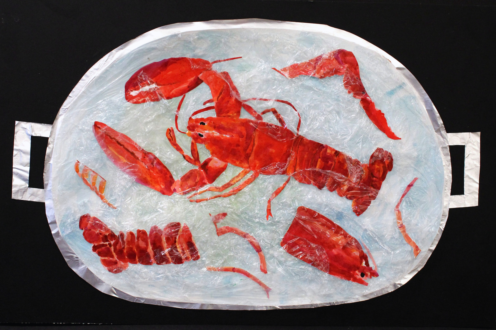
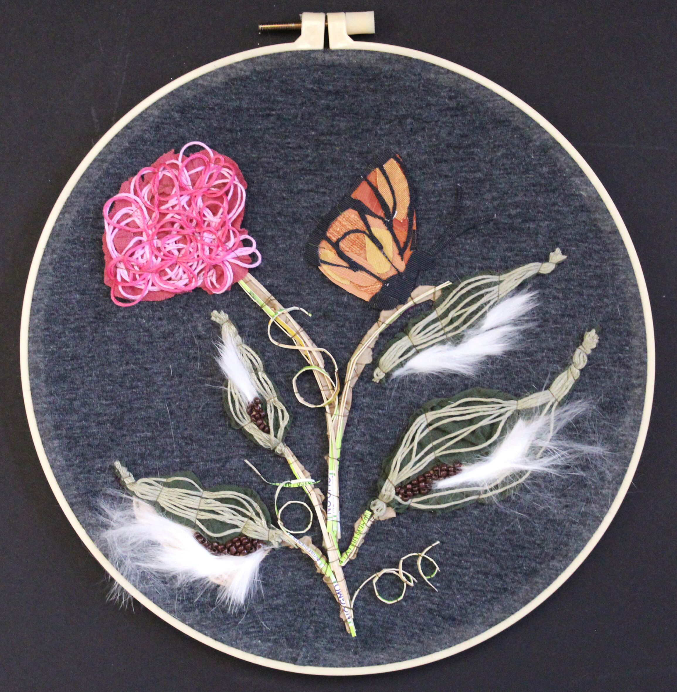
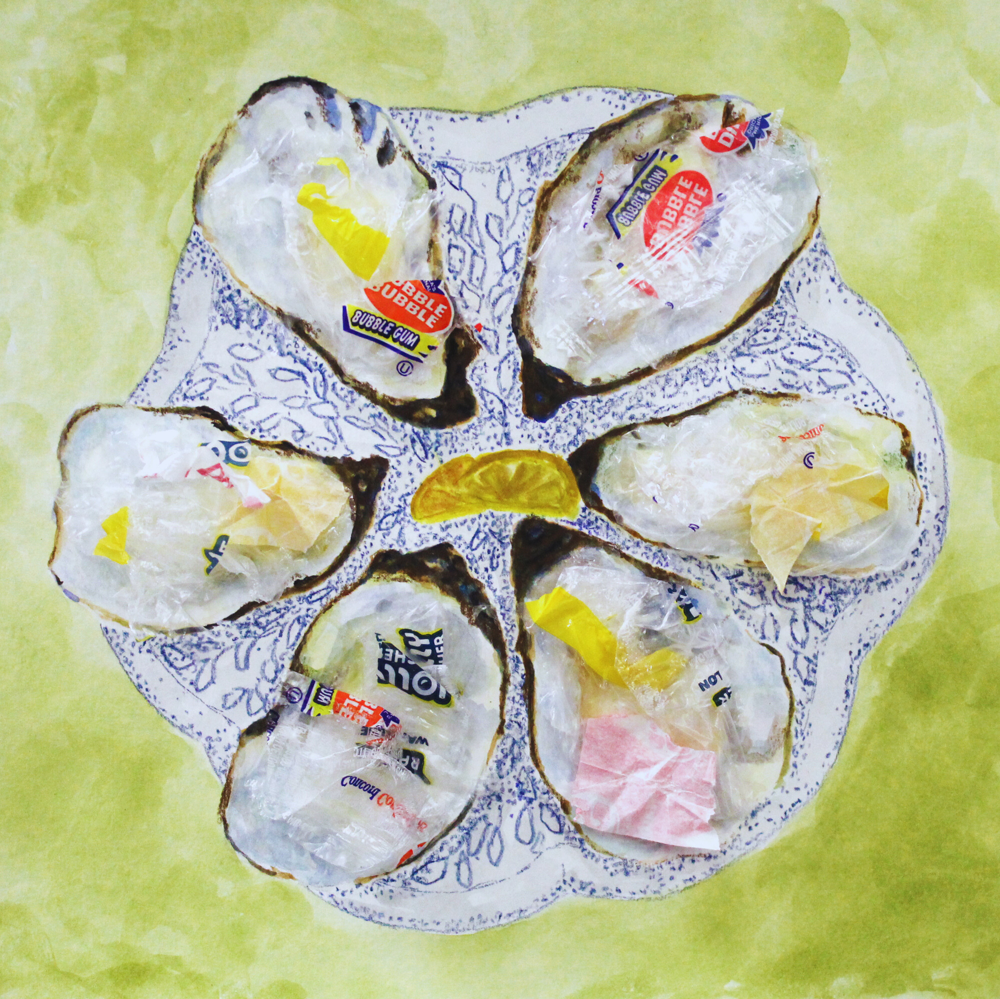
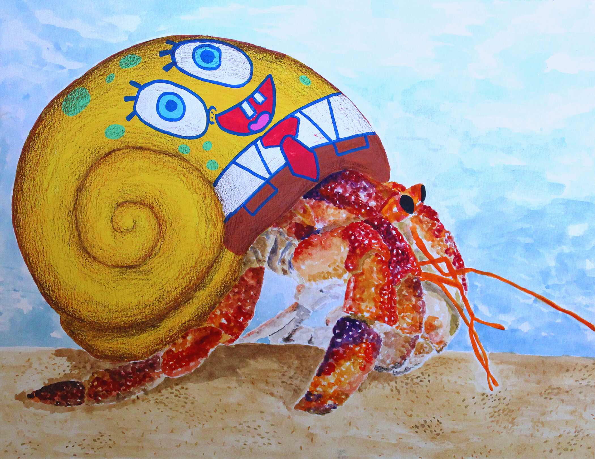
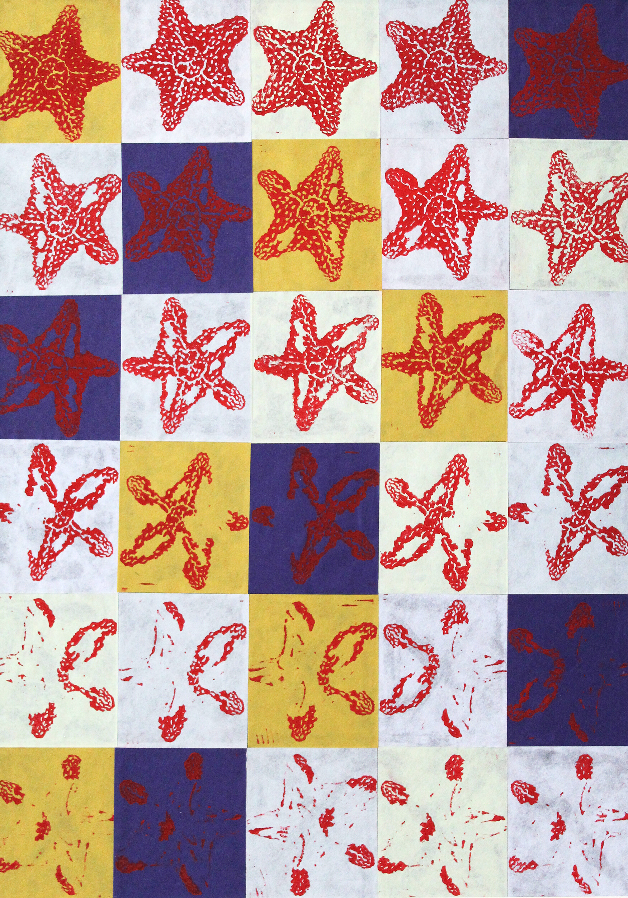
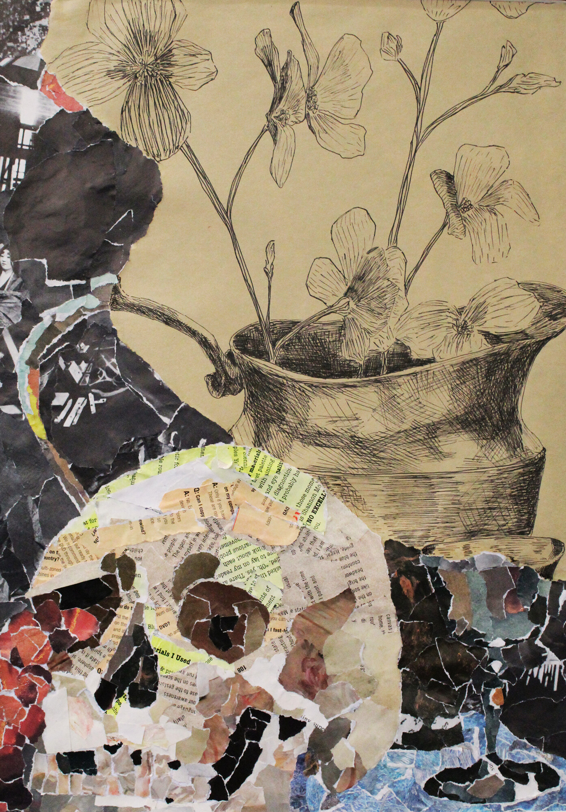
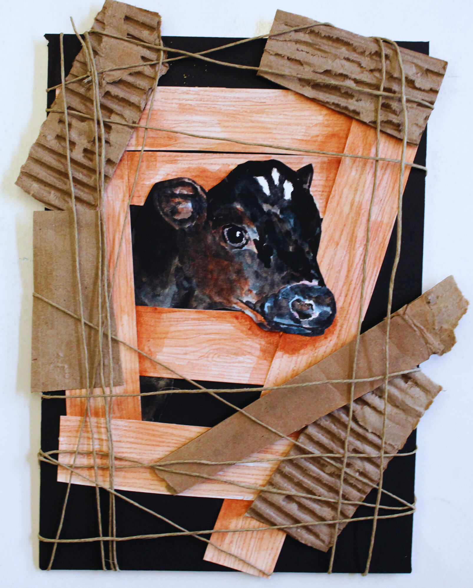

A collection of my creative pieces exploring themes of nature,
sustainability, and mixed media techniques.
Reaching for RenewalMagazine cutouts, newspaper, watercolor, acrylic paint

Butchered PigCardboard, paper napkins, tape, acrylic paint
Vacanti "Ear" MouseNewspaper, cardboard, watercolor

Fast Fashion FishScrap fabric, cardboard, glue

Lobster BoilingTinfoil, plastic bag, watercolor, cardboard

Habitat LostRabbit hair, fabric, beads, thread

What Goes Around Comes AroundFound trash, colored pencil, watercolor

Painted Hermit CrabWatercolor, paint marker, colored pencil
Stronger TogetherNetting, cardboard, watercolor

Sea Star Wasting SyndromeLinocut stamp, printing ink

Still LifeMagazine, ink, cardboard

Forced TendernessWatercolor, twine, glue